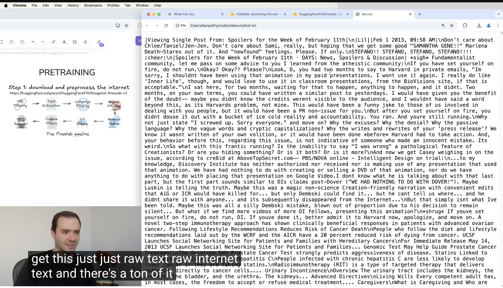
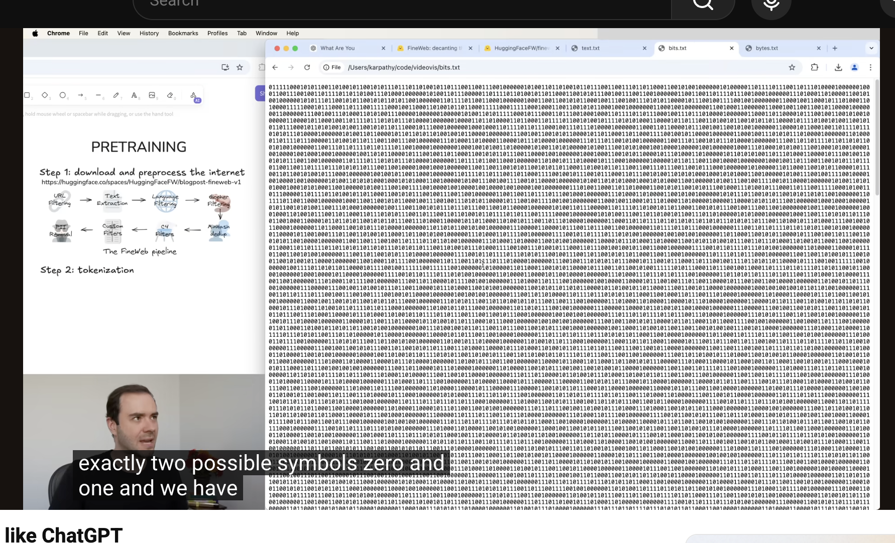
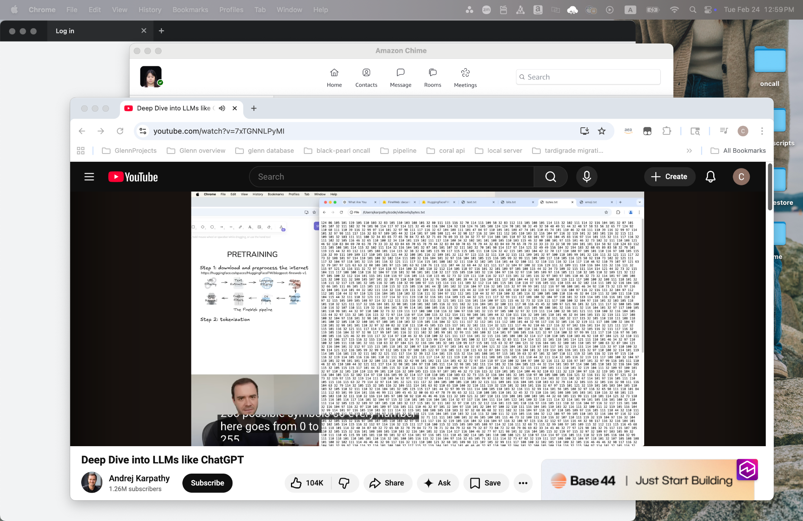

Course Notes
CS146S: The Modern Software Developer
Reference hierarchy
Deep Dive into LLMs
How pretraining data is prepared
- Start with massive web data sources like Common Crawl HTML datasets.
- Filter aggressively before model training:
- Blocklist known low-quality or unsafe websites.
- Keep mostly text-only content with strong quality scores.
- Remove personal or sensitive information.
- Normalize documents to a clean one-dimensional text stream.
Tokenization / symbol conversion
- Use byte-level representation and grouping to convert text into model-readable symbols.
- Apply a Byte Pair Encoding (BPE)-style process to build a compact vocabulary.
- Iteratively merge frequent pairs to reduce sequence length and form reusable token groups.
Quick memory cue: data quality and filtering are as important as model architecture.
Text Diagram (same meaning)
Raw Web Pages
Filtering
Clean Text
Bits (0/1)
Bytes (0-255)
BPE Tokens
Train LLM
Lesson Screenshots


